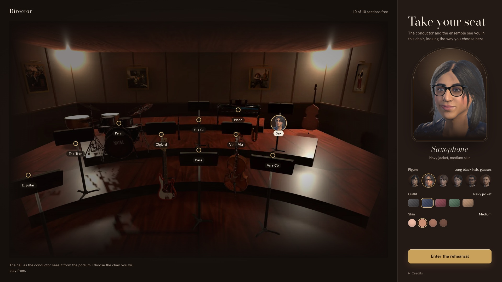
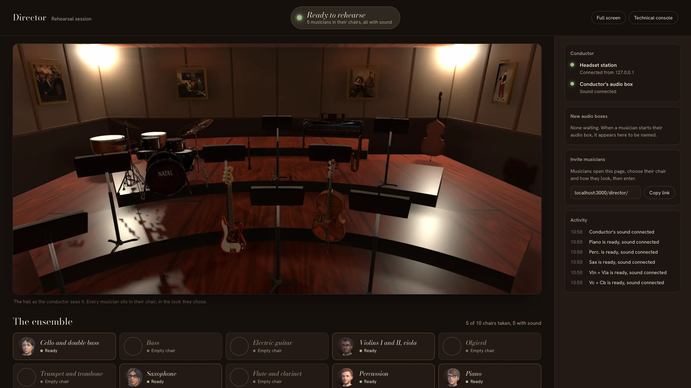

SONIC Lab · Politecnico di Torino · MUSMET
Director
Conduct an orchestra that isn’t in the room.
Arman Naseri Far, with Prof. Cristina Rottondi, Dr. Leonardo Severi and Dr. Matteo Sacchetto
Musicians can already play together from far apart. Nobody can conduct them.
Gesture
Room
Place
On a video call there is no beat to follow: the picture is late, flat and small.
Nobody shares a space: no podium, no rows, no eye contact.
Every voice comes from one point. You can’t hear who is where.
Director gives the conductor all three back.
Gesture
Room
Place
The conductor’s head and hands reach every musician, live.
One rehearsal hall, shared by everyone.
Every musician is heard from their own chair.
Sent from the headset, not filmed by a camera.
The conductor on the podium, each musician in a chair, playing.
The sound follows the conductor’s head, as in a real hall.
Built on the lab’s low-latency audio, so the music itself stays in time.

The conductor
Puts on a headset. Steps onto the podium.
Turns the score pages on the stand.
Starts and stops the rehearsal.
Head and hands reach every musician.
The ensemble
Every musician in their chair, playing their part.
Ten sections, from strings to drums. Each looks the way they chose and plays in time with the others.
The musician
Opens a link. Picks a chair.
The chair they choose is where the conductor sees them, and where their sound comes from.
A browser for the picture, a small audio box for the sound.

Spatial sound
Turn your head. The sound stays in the chair.
In front or behind, left or right, above or below: each musician is heard from where they sit, as in a real hall.
Levels shown are the ones measured in the lab with the headset.
Whoever runs it
One page to run the rehearsal.
Who is in, whose sound is connected, and whether the conductor is ready.
A new audio box is named with one click. The top line says when to start.

Measured in the Sonic Lab, November
It works end to end.
Musician’s box
Conductor’s box
9 ms there and back, shown 400 times slower
9
ms
Sound there and back between two audio boxes
Playing together tolerates about 25 ms one way
17
dB
Between the ears as the conductor turns the head
Real microphone, real headset
72
fps
In the headset, all ten sections seated
Meta Quest Pro, the headset’s full rate
8
voices
Placed in space at once
7 ms to place them, on a Raspberry Pi
Your turn.
- Put on the headset: you are on the podium.
- A musician takes a chair from the browser and plays.
- Turn your head: the sound stays in the chair.
- On the screen, the session page shows who is in.
Spatial audio by atmoky (atmoky.com). MUSMET project, SONIC Lab, Politecnico di Torino.